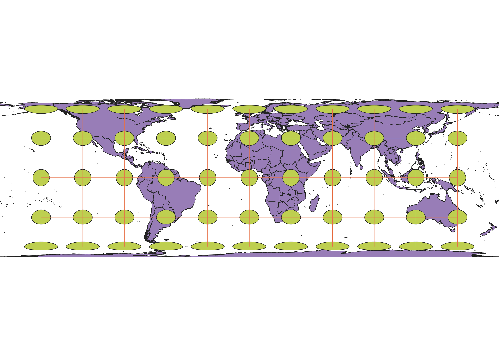

In this project I learned how to display images in different projections
How did I display my map using QGIS
I found a vector layer using NaturalEarthData of the world. Using this data I was able to manipulate the CRS inputdata, changing the projection of the map. I used a variety of projections coupled with the indicatrix matrix that reflected varying shapes and sizes of the land area. The indicatrix plugin added a layer of lines and circles that indicated the distortion of the land as a whole. With this data I was able to depict 9 maps, each with a different projection of the world.
World Behrman: 54017
This projection of the world using World_Behrman depicts mild stretching and compression. The circles are relatively small and circular near the equator, and become progressively more elliptical and distorted towards the poles.

Sphere_Winkel_I:53018
This projection of the world using Sphere_winkle as the CRS input shows spherical distortion. The horizontal line at the equator shows near perfect circles. Reaching the poles the circles become larger and closer to each other yet more distorted towards the ends. The vertical lines feature parabolic shapes, increasing in slope from the center towards the left and right ends.

World_Polyconic:54021
This projection of the world using World_Polyconic as the CRS input shows distortion appearing to be even more spherical. The circles are increasingly stretched following the vertical lines. The horizontal line is straight at the equator while the other lines are more parabolic towards the poles.

World_Cylindrical_Equal_Area:54034
This projection of the world using World_Cylindrical_Equal_Area as the CRS input shows a map somewhat similar to the mercator projection. The circles at the equator are prefect circles, however reaching the poles the land/circles are distorted horizontally.

World_Equidistant_Conic:54027
This projection projects the globe as if you were to look down at the North Pole. There seems to be 5 circles each increasing in radius reaching the South Pole. The Circles are the most stretched and largest towards the South Pole. This projection does not preserve the shape of the Southern Hemisphere regions, however reaching the north, shape seems to be most preserved.

WGS 84-pseudo-mercator:3857
This projection of the world is one most are used to. Doesn't indicate true size or distance. However, this projection pererves natural shape. Size increases towards the poles.

North_Pole_Azimuthal_Equidistant:102016
This projection of the world shows a similar spherical projection to World_equidistant_conic in that it shows a view facing down the North Pole. This preserves the area closest to the North Pole. However, reaching the South Pole, land is dramatically stretched to follow the spherical shape.

WGS 84:4326: 4325
This projection the world shows a more traditional map, similar to mercator. The area at the equator is the least stretched. As you reach the poles the area is stretched greatly and increases in size.

World Aitoff:54043
The projection of the world follows a spherical distortion where land area is most preserved near the equator. As you reach the poles, area is squeezed and increases in size. Land seems to be closer to each other than it is in reality.

Data used for this project
Downloaded from Natrual Earth (same as class html)